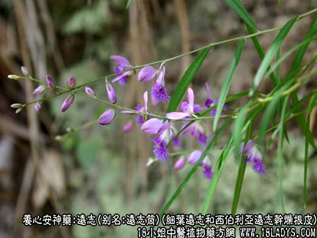
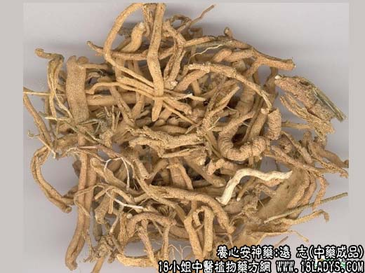
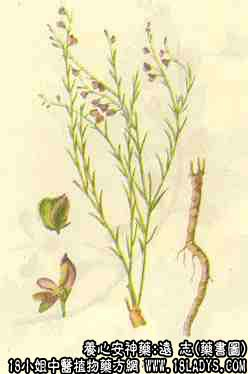

本品为常用中药。始载《神农本草经》，列为上品。
别名：远志肉、远志筒。
来源：为远志科植物细叶远志和西伯利亚远志、宽叶远志的干燥根皮或根。野生于山坡、草丛、路边。
植物形态：细叶远志：多年生草本，高25~40厘米，根圆柱形，长而肥厚，微弯曲，浅黄棕色。茎基土黄色略带木质，茎多数丛生于茎基之上，圆柱形，灰绿色，斜生或直生，直径约1毫米，近光滑。叶互生，线形，长1~3厘米，宽1~2毫米，无柄，全缘。总状花序顶生；花小，有长柄，淡蓝紫色，花瓣3，其中1瓣较大，先端有丝状附属物；花萼5，不相连，3片较小，2片呈花瓣状，绿白色边缘紫色。蒴果扁平，倒心形，边缘有窄翅，光滑无毛。
宽叶远志：茎被短伏毛。叶卵状披针形宽3~6毫米。果实周缘被短睫毛。
产地 ：主产于山西、陕西、河南、河北等地，此外山乐、内蒙古、安徽、湖北、吉林、辽宁等地亦产。
采集加工：春秋二季采挖，去掉残茎、须根及泥土，稍晒。选粗大而整齐的，平放板上来回搓至皮肉与木心分离，抽去木心，晒干，即为“远志筒”；较小的根用棒捶裂，去掉木心，因皮部不成筒状，故称“远志肉”未去木心者称为“远志棍”。
性状鉴别：远志筒呈长管状，稍弯曲，形似蚯蚓，长约3~13厘米，直径约0.3~1.3厘米。外皮灰黄色，全体有密而深陷的横皱纹或裂纹。质脆，易折断，断面黄白色，中空。气微，味苦微辛，有剌喉感。远志肉多已破碎，肉较薄。远志棍，细小，中央有坚硬的木心。以筒粗、肉厚、皮细、色嫩、去净木心者为佳。
主要成分：含远志皂甙，水解后生成远志皂甙元A、远志皂甙元B，并含远志醇，onsicin。
功效与作用：安神、祛痰、消炎。
1、祛痰。为恶心性祛痰药，所含皂甙能剌激胃粘膜引起轻度恶心，从而反射性地增加支气管分泌，但作用较弱。
2、抗菌。体外试验对革兰氏染色阳性菌、痢疾杆菌、伤寒杆菌有显著抑制作用。
炮制：用甘草水煮。
性味：辛、苦、温。
归经：入心、肾、肺经。
功能：惊悸健忘，痈疽疮肿，咳嗽多痰，失眠多梦。
临床应用：1、用于安神，造用于心气郁结或心血虚、痰涎壅塞而致的烦热、精神恍惚、惊悸、不能安睡，可见于神经衰弱或病后虚烦失眠。取其能散郁而安神，但单用无力，需配茯神、酸枣仁等，如归脾汤（见龙眼肉项下）、养心汤（见茯神项下）、远志汤。
2、用于化痰，治寒痰喘咳，但力较缓弱，需配川贝、半夏、茯苓等。
附1：过去有人认为远志能益精强志，治健忘，但实际上远志无此效力，前人早已有反驳，说远志“用以豁痰利气则可，若谓益精强志则不能”。
用量：1~9g，最常用4.5g。量过大能引起呕吐。
处方举例：远志汤（《证治准绳》）：远志、黄芪、当归、麦冬(去心)、酸枣仁、石斛各4.5g，党参9g，茯神2.1g，甘草1.5g，水煎服。
附2：小草为远志的地上部分，主要用其叶，性能与远志大致相同。古方有用之，但现代处方统用远志，不用小草。